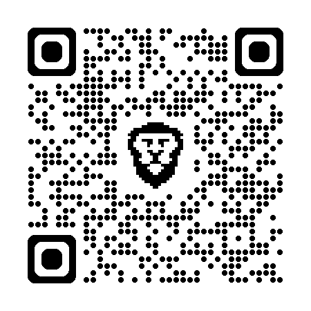

Explora primero. Evita riesgos.
Robot explorador diseñado para ayudar a arqueólogos a inspeccionar cuevas de forma más segura, recolectando video y datos ambientales antes del ingreso humano.
Muchas zonas de cuevas arqueológicas no pueden explorarse fácilmente porque son estrechas, frágiles o potencialmente riesgosas para las personas. Esto limita la documentación del patrimonio y expone a los Arqueologos a condiciones adversas antes del ingreso.
Espacios reducidos, poca visibilidad y condiciones ambientales inciertas.
Algunas áreas deben documentarse con el menor nivel posible de intervención.
Sin información previa, entrar puede ser riesgoso e ineficiente.
Antes de diseñar el robot, buscamos comprender el problema desde el contexto real. Visitamos espacios vinculados al patrimonio arqueológico y consultamos especialistas para conocer mejor el trabajo de los arqueólogos y las limitaciones de la exploración en cuevas.
Observamos el valor cultural y las limitaciones reales de las cuevas.
Recibimos orientación sobre riesgos, documentación y exploración.
Convertimos una necesidad real en una solución tecnológica concreta.
De la investigación surgió nuestra pregunta guía:
"¿Cómo podemos ayudar a los arqueólogos a explorar zonas inaccesibles de forma segura?"
NITAINO es un robot explorador tipo vehículo que puede ingresar en zonas reducidas y difíciles de inspeccionar para enviar información útil antes del ingreso humano.
Transmite video del interior.
Registra temperatura, humedad y presencia de gases como indicador preventivo.
Facilita la visibilidad en espacios oscuros.
Permite evaluar antes de entrar.
"No sustituye al arqueólogo. Lo ayuda a tomar decisiones más seguras y mejor informadas."
Construimos una solución funcional de bajo costo con componentes accesibles, seleccionados específicamente por su utilidad en exploración remota.
Probamos el robot, detectamos fallos y rediseñamos componentes para mejorar su desempeño.
Las ruedas iniciales no respondieron bien en pruebas de desplazamiento. Rediseñamos e iteramos hasta lograr una mejor respuesta.
Ajustamos la iluminación para mejorar la captura visual sin comprometer el funcionamiento general del prototipo.
Nuestro proyecto no se basa en una idea. Se basa en iteración.
NITAINO puede ayudar a reducir exposición humana en exploraciones preliminares, apoyar la toma de decisiones de campo y contribuir a una documentación más cuidadosa del patrimonio.
Menos exposición inicial a zonas inciertas.
Más información antes de intervenir físicamente un espacio sensible.
Tecnología creada por estudiantes para responder a un problema real.
Presentamos la idea a personas vinculadas al tema y recibimos retroalimentación favorable sobre su valor como apoyo a la exploración y documentación.
"Esto confirmó que nuestro proyecto ira más allá de la competencia porque responde a una necesidad real."
Nuestro siguiente objetivo es transformar el prototipo en una herramienta más robusta para exploración remota.
"Con NITAINO no solo construimos un robot. Diseñamos una forma más segura de acercarnos al pasado."